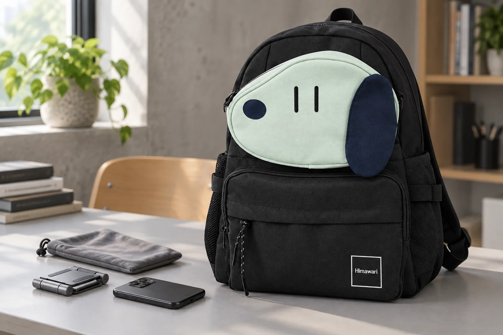
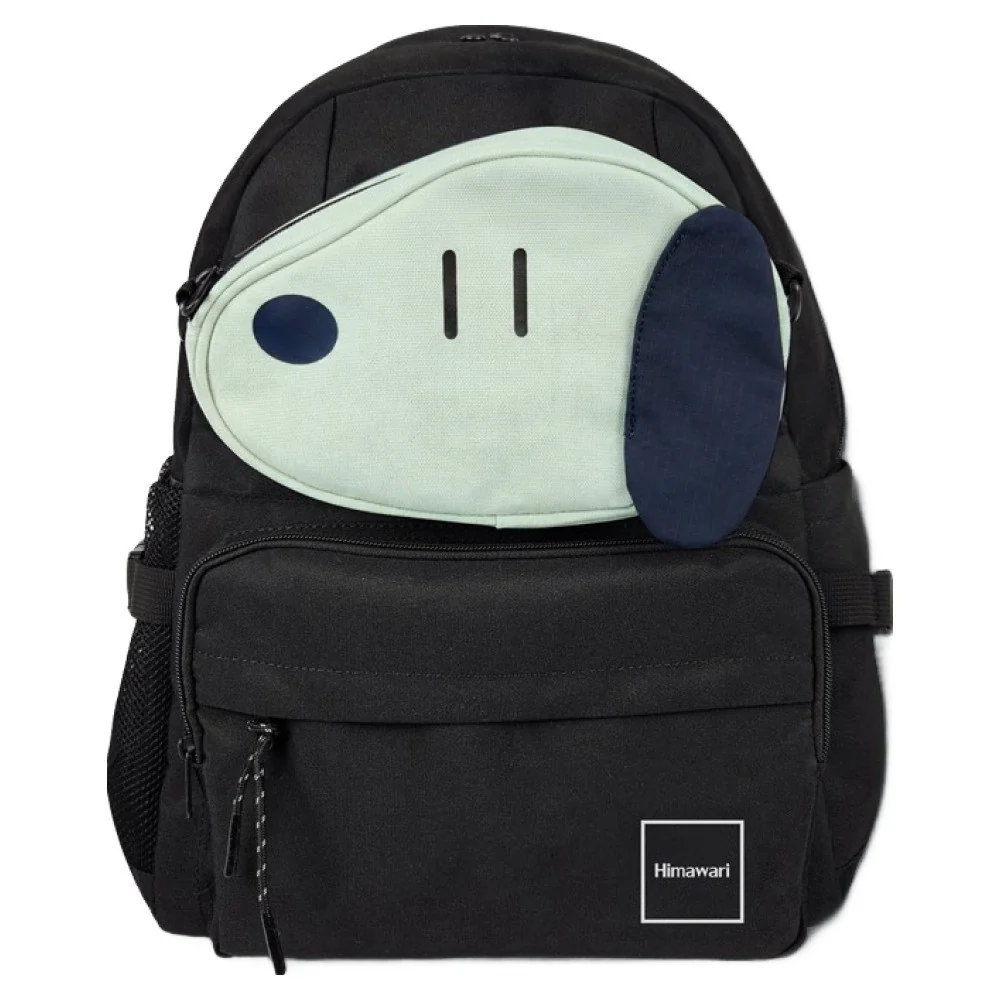

접이식 거치대를 치울 때 보는 접힌 모양

공용 책상에서 휴대전화로 자료를 보다가 자리를 옮기면 휴대전화부터 챙기게 됩니다. 받침과 연결된 케이블, 펼친 거치대는 그다음에 남습니다. 거치대를 펼친 모습으로 가방에 넣으면 휴대전화를 받치던 부분이 다른 물건과 만날 수 있습니다. 접는 동작을 책상 위에서 마치고 나면 실제로 옮길 물건의 형태도 달라집니다. 휴대전화와 함께 쓰던 소품을 각각 이동할 상태로 만드는 시간을 짧게 남겨봅니다.
받침에서 기기를 떼는 순서
휴대전화에 연결된 선이 있다면 해당 기기와 거치대의 안내에 맞춰 분리합니다. 거치대가 충전 기능을 갖춘 제품인지 단순 받침인지에 따라 다뤄야 할 연결부가 다를 수 있습니다. 휴대전화와 거치대를 한꺼번에 잡아 옮기기보다 각 물건을 내려놓을 자리를 먼저 마련합니다. 기기를 손에 든 채 힌지까지 접으려고 하면 어느 부분을 받쳐야 할지 복잡해질 수 있습니다.
기기를 분리한 뒤에는 케이블과 연결 소품이 어디에 남았는지 봅니다. 짧은 어댑터나 분리형 부품이 있다면 거치대의 구성과 함께 확인합니다. 자기 소품과 공용 책상의 부속품도 구별해둡니다. 책상에 놓여 있던 것을 모두 자신의 파우치에 넣기보다 사용한 구성만 확인하면 됩니다. 사용 전후에 같은 자리를 보면 무엇이 남았고 무엇을 이미 챙겼는지 읽기 쉽습니다.
휴대전화는 거치대를 정리하는 동안 다른 단단한 소품과 직접 맞닿지 않는 자리에 둡니다. 받침을 누르며 접을 때 기기가 근처에 있으면 함께 밀릴 수 있으므로 동작할 공간을 먼저 만듭니다. 쓰던 자료를 계속 보아야 한다면 기기를 내려놓는 자리와 거치대를 접는 자리를 나누면 됩니다. 정리를 시작했다고 휴대전화가 가방 안에 들어간 것으로 기억하지 않고 마지막에 위치를 다시 확인합니다.
작게 보이는 물건과 접힌 물건
힌지를 움직이는 순서와 접을 수 있는 범위는 자신의 거치대 안내에서 봅니다. 움직임이 뻑뻑한 부분을 힘으로 끝까지 누르거나 다른 제품의 접힌 모습을 따라갈 필요는 없습니다. 접은 뒤 휴대전화를 받치던 턱과 옆으로 나온 나사, 바닥 받침의 위치를 살펴봅니다. 바깥에서 보이는 폭이 줄어들어도 돌출된 부분이 없어졌다고 판단하지 않고 실제 모양을 확인합니다.
평소와 다르게 접히거나 부품이 비뚤어졌다면 파우치에 넣기 전에 그 상태를 봅니다. 분리된 패드를 다시 붙이는 방법도 제조사 안내를 확인한 뒤 정합니다. 고무 받침에 이물질이 붙어 있다면 제품의 관리 방법을 따릅니다. 케이스를 닫아 문제를 가리는 식으로 이동 준비를 마치기보다 지금 해결할 것과 문의할 것을 구별합니다. 다음에 공용 책상에서 다시 펼쳤을 때 쓸 수 있는 상태인지 판단할 정보가 남습니다.
Himawari No.0423 네이비가 등장하는 소품 장면에서는 접힌 거치대와 휴대전화를 별도 묶음으로 챙기는 순서를 생각합니다. 가방에 들어갈 파우치는 펼쳤을 때의 보기 좋은 형태보다 닫힌 거치대의 받침 턱과 두께를 기준으로 고릅니다. 거치대가 자연스럽게 들어가고 파우치 여밈이 눌리지 않는지 직접 보는 일부터 시작하면 됩니다.

파우치 안에 케이블을 함께 둔다면 단단한 플러그가 거치대의 힌지 사이에 끼지 않는지 봅니다. 빈틈마다 부속품을 밀어 넣기보다 각각 다시 꺼낼 동작을 생각합니다. 케이블이 들어갈 별도 자리가 없으면 따로 묶을 수 있습니다. 같은 책상에서 쓰는 소품이라는 이유만으로 반드시 한 파우치에 넣어야 할 필요는 없습니다. 사용 순서에 맞춰 나누면 다음 자리에서 다시 펼치기도 편합니다.
가방을 닫기 전에는 휴대전화의 위치와 소품 파우치의 상태를 함께 확인합니다. 거치대가 다른 물건을 받치는 바닥 역할을 하도록 놓였는지, 파우치 위에 무거운 물건이 얹혔는지도 볼 수 있습니다. 휴대전화가 이미 케이스에 있더라도 금속 소품과 같은 빈 공간에 넣는 방법이 적절한지는 별도로 판단합니다. 실제 소지품들이 서로 닿는 위치를 기준으로 정리하면 새 수납 도구를 더하기 전에 조정할 부분이 보입니다.
다음 책상에 펼칠 때 필요한 준비
다음 장소에서는 거치대를 먼저 꺼내 자기 제품의 안내에 맞춰 펼칩니다. 휴대전화를 올리기 전에 받침과 힌지 상태, 놓을 책상의 면을 확인합니다. 자료를 보면서 충전도 할 계획이라면 연결 구성에 맞춰 선이 놓일 자리를 따로 정합니다. 이동 때문에 임시로 한데 담은 것을 사용 자리에서도 그대로 펼치지 않고 필요한 물건의 순서를 고르면 됩니다.
공용 책상에서 자주 사용하는 물건이라면 오늘 사용한 소품이 모두 돌아왔는지 짧게 확인할 수 있습니다. 긴 목록보다 본체와 분리 부품의 위치가 같은 묶음 안에서 읽히는지가 우선입니다. 같이 사용하는 사람의 물건이 있다면 누가 무엇을 회수할지도 그 자리에서 정합니다. 거치대는 작아서 시야에서 벗어나기 쉬운 물건이지만 정리한 마지막 모습을 기억할 수 있는 위치를 두면 남겨두었는지 확인하기 쉽습니다.
쓰고 난 뒤 다시 접었을 때 처음과 달라진 부분이 있으면 다음 사용 전에 살펴볼 내용을 남겨둡니다. 힌지나 받침이 정상 상태인지 확실하지 않다면 안내와 문의를 확인합니다. 접힌 거치대를 담는 과정이 끝났다면 책상 위를 한 번 읽어 휴대전화, 선, 작은 부품이 남지 않았는지 봅니다. 가방 안으로 옮긴 소품과 원래 자리에 놓인 공용 물건이 구별된 상태로 자리를 떠나면 됩니다.